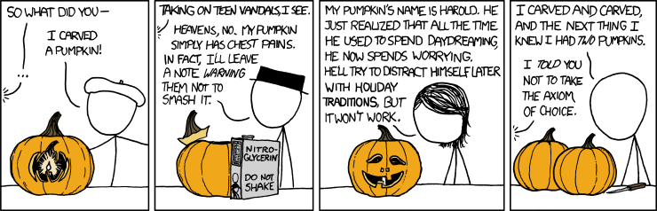

In a few words, MaxEnt attempts to find the distribution that represent an maximal state of ignorance. This is achieved by maximizing the information entropy of the distribution, subject to constraints.
We know nothing about how \(x\) is distributed.
Adding a constraints on \(x\)'s variance
Adding a constraint on the \(x\)'s mean
...
...
“[...] we re-emphasize that MaxEnt is a mathematically proven method for inferring the most likely probability distribution if our knowledge about that distribution can be described as a set of constraints on the distribution” - Harte et al. (2008).
